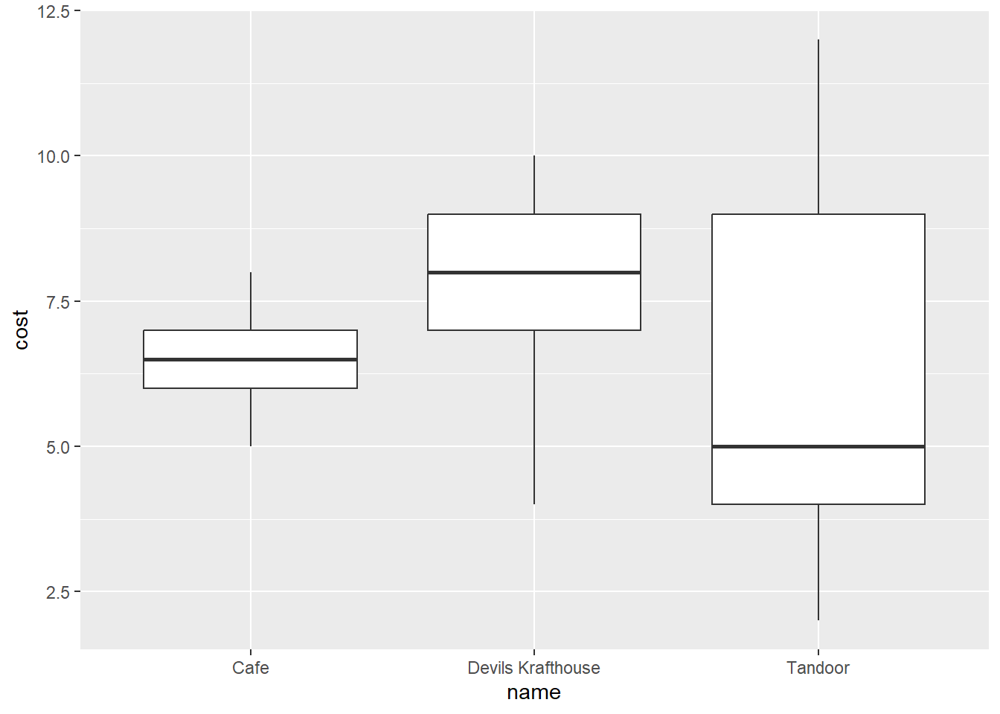

library(tidyverse)Import Data
In this workshop we recommend the tidyverse approach to learning and using R
Tidyverse has several very handy library packages
| package | use | package | use |
|---|---|---|---|
dplyr |
data wrangling | forcats |
categorical data |
ggplot2 |
visualization | lubridate |
dates and times |
readr |
import CSV | stringr |
regular expressions |
purrr |
iteration | tidyr |
pivot data |
readxl |
import Excel files |
Load library packages
Import data
In RStudio,, in the Files quadrant and tab, click the data folder, then left-click the brodhead_center.csv file. Using the context menu, choose the Import Dataset… option. Once inside the data wizard, you can paste the necessary code into the code chunk below
# library(readr)
brodhead_center <- read_csv("data/brodhead_center.csv")Rows: 59 Columns: 7
── Column specification ────────────────────────────────────────────────────────
Delimiter: ","
chr (5): name, type, menuType, itemType, itemName
dbl (2): cost, rating
ℹ Use `spec()` to retrieve the full column specification for this data.
ℹ Specify the column types or set `show_col_types = FALSE` to quiet this message.# View(brodheadCenter)Look at the data object
brodhead_center# A tibble: 59 × 7
name type menuType itemType itemName cost rating
<chr> <chr> <chr> <chr> <chr> <dbl> <dbl>
1 Devils Krafthouse bar and grill appetizer snack sweet potato… 4 8
2 Devils Krafthouse bar and grill appetizer snack french fries 4 10
3 Devils Krafthouse bar and grill appetizer snack quesadillas 6 5
4 Devils Krafthouse bar and grill appetizer snack southwest ch… 8 6
5 Devils Krafthouse bar and grill appetizer snack chicken tend… 7 7
6 Devils Krafthouse bar and grill appetizer snack nachos 8 8
7 Devils Krafthouse bar and grill appetizer snack peel and eat… 9 5
8 Devils Krafthouse bar and grill appetizer snack tortilla chi… 4 6
9 Devils Krafthouse bar and grill entree sandwich turkey club … 9 5
10 Devils Krafthouse bar and grill entree sandwich fried chicke… 9 5
# … with 49 more rowsWrangle
{dplyr} verbs help you wrangle, clean, and normalize your data
| dplyr function | use for |
|---|---|
select() |
subset columns |
filter() |
subset rows |
arrange() |
sort rows by column variable values |
group_by() |
use with summarize for subtotals |
summarize() |
generate column totals and subtotals, etc. |
count() |
a specialized summarize() function |
Examples
select()
brodhead_center |>
select(name, type)# A tibble: 59 × 2
name type
<chr> <chr>
1 Devils Krafthouse bar and grill
2 Devils Krafthouse bar and grill
3 Devils Krafthouse bar and grill
4 Devils Krafthouse bar and grill
5 Devils Krafthouse bar and grill
6 Devils Krafthouse bar and grill
7 Devils Krafthouse bar and grill
8 Devils Krafthouse bar and grill
9 Devils Krafthouse bar and grill
10 Devils Krafthouse bar and grill
# … with 49 more rowsfilter()
brodhead_center |>
filter(menuType == "dessert")# A tibble: 7 × 7
name type menuType itemType itemName cost rating
<chr> <chr> <chr> <chr> <chr> <dbl> <dbl>
1 Devils Krafthouse bar and grill dessert dessert chocolate brow… 8 8
2 Devils Krafthouse bar and grill dessert dessert banana split 6 9
3 Devils Krafthouse bar and grill dessert dessert key lime pie 6 10
4 Cafe cafe dessert dessert cinnamon sugar 5 9
5 Cafe cafe dessert dessert nutella 6 8
6 Cafe cafe dessert dessert banana foster 6 7
7 Cafe cafe dessert dessert crepe suzette 6 8arrange()
brodhead_center |>
arrange(cost)# A tibble: 59 × 7
name type menuType itemType itemName cost rating
<chr> <chr> <chr> <chr> <chr> <dbl> <dbl>
1 Tandoor restaurant appetizer bread naan 2 10
2 Tandoor restaurant appetizer bread onion kulcha 3 8
3 Tandoor restaurant appetizer bread garlic naan 3 10
4 Devils Krafthouse bar and grill appetizer snack sweet potat… 4 8
5 Devils Krafthouse bar and grill appetizer snack french fries 4 10
6 Devils Krafthouse bar and grill appetizer snack tortilla ch… 4 6
7 Devils Krafthouse bar and grill side soup black bean … 4 8
8 Tandoor restaurant appetizer appetizer vegetable s… 4 8
9 Tandoor restaurant appetizer appetizer gobi pakora 4 NA
10 Tandoor restaurant appetizer appetizer aloo bhonda 4 NA
# … with 49 more rows
mutate()
brodhead_center |>
mutate(ratings_high = rating * 2)# A tibble: 59 × 8
name type menuType itemT…¹ itemN…² cost rating ratin…³
<chr> <chr> <chr> <chr> <chr> <dbl> <dbl> <dbl>
1 Devils Krafthouse bar and grill appetiz… snack sweet … 4 8 16
2 Devils Krafthouse bar and grill appetiz… snack french… 4 10 20
3 Devils Krafthouse bar and grill appetiz… snack quesad… 6 5 10
4 Devils Krafthouse bar and grill appetiz… snack southw… 8 6 12
5 Devils Krafthouse bar and grill appetiz… snack chicke… 7 7 14
6 Devils Krafthouse bar and grill appetiz… snack nachos 8 8 16
7 Devils Krafthouse bar and grill appetiz… snack peel a… 9 5 10
8 Devils Krafthouse bar and grill appetiz… snack tortil… 4 6 12
9 Devils Krafthouse bar and grill entree sandwi… turkey… 9 5 10
10 Devils Krafthouse bar and grill entree sandwi… fried … 9 5 10
# … with 49 more rows, and abbreviated variable names ¹itemType, ²itemName,
# ³ratings_highcount()
| Count values in a group | |
| menuType | n |
|---|---|
| entree | 24 |
| appetizer | 23 |
| dessert | 7 |
| side | 5 |
brodhead_center |>
count(menuType)# A tibble: 4 × 2
menuType n
<chr> <int>
1 appetizer 23
2 dessert 7
3 entree 24
4 side 5group_by() & summarise()
| Summarise column |
| Sum_of_cost |
|---|
| 412 |
brodhead_center |>
group_by(name) |>
summarise(min_cost = min(cost), mean_cost = mean(cost), max_cost = max(cost))# A tibble: 3 × 4
name min_cost mean_cost max_cost
<chr> <dbl> <dbl> <dbl>
1 Cafe 5 6.5 8
2 Devils Krafthouse 4 7.5 10
3 Tandoor 2 6.32 12Visualize
Visualize your data with {ggplot2}
brodhead_center |>
ggplot(aes(x = name, y = cost)) +
geom_boxplot() 
brodhead_center |>
ggplot(aes(x = rating, y = cost)) +
geom_point(aes(color = name))Warning: Removed 3 rows containing missing values (`geom_point()`).